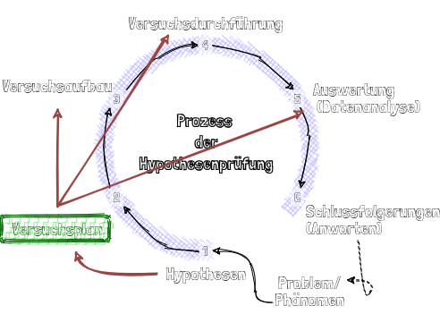
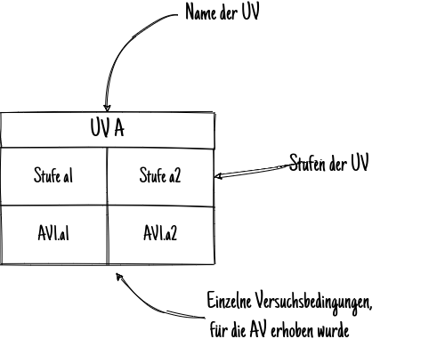
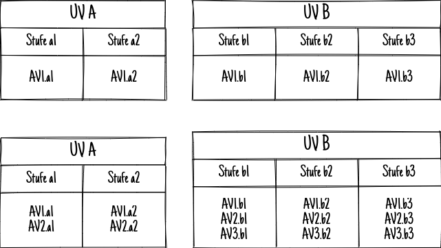
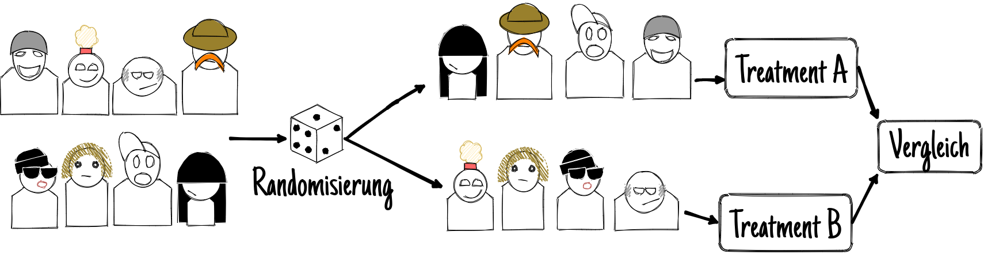

Experimentelle Versuchspläne
Organisatorisches
Semesterplan
| Sitzung | Datum | Sitzungstitel |
|---|---|---|
| 1 | 02.11.2020 | Warum wissenschaftliche Psychologie |
| 2 | 28.11.2020 29.11.2020 | Hypothesen und der Prozess der Hypothesenprüfung |
| 3 | 28.11.2020 29.11.2020 | Experimentelles Vorgehen |
| 4 | 28.11.2020 29.11.2020 | Literaturrecherche |
| 5 | 28.11.2020 29.11.2020 | Operationalisieren und Messen |
| 6 | 12.12.2020 13.12.2020 | Experimentelle Versuchspläne |
| 7 | 12.12.2020 13.12.2020 | Störvariablen im Experiment |
| 8 | 12.12.2020 13.12.2020 | Nicht-experimentelle Versuchspläne |
| 9 | 12.12.2020 13.12.2020 | Material und Stichprobe |
| 10 | 23.1.2021 24.1.2021 | Auswertung, Darstellung und Interpretation |
| 11 | 23.1.2021 24.1.2021 | Ethische Probleme im Versuch |
| 12 | 23.1.2021 24.1.2021 | Publikationsprozess |
| 13 | wird noch bekannt gegeben | Vorstellung der Gruppenarbeiten |
| 14 | wird noch bekannt gegeben | Klausurvorbereitung |
Wiederholung
Operationalisieren

(Qualitäts-)Merkmale von Operationalisierungen:
- Divergenz: Ein theoretisches Konstrukt kann durch mehrere Indikatoren operationalisiert werden, wobei jeweils verschiedene Aspekte des Konstrukts unterschiedlich gut abgebildet werden.
- Konvergenz : Ein empirischer Indikator operationalisiert gleichzeitig verschiedene Aspekte mehrerer Konstrukte, wobei manche besser abgebildet werden als andere.
- Sensitivität : „Empfindlichkeit“ mit der ein Indikator das gemeinte Konstrukt anzeigt, unabhängig davon ob er zusätzlich auch weitere Konstrukte anzeigt.
- Selektivität/Spezifität : „Präzision“ mit der ein Indikator ausschließlich das gemeinte Konstrukt und nicht auch weitere Konstrukte anzeigt.
\(\rightarrow\) Eine Hypothese bewährt sich um so stärker, bzw. kann um so weiter generalisiert werden, je mehr unterschiedliche Operationalisierungen für ihre Kernkonstrukte verwendet werden. „Funktioniert“ nur eine bestimmte Operationalisierung ist oft fraglich welches Konstrukt eigentlich dahinter steht.
Validitäten bei Experimenten
Konstruktvalidität:
Gibt an, inwieweit UVn und AVn so operationalisiert sind, dass sie die jeweiligen psychologischen Konstrukte möglichst zutreffend repräsentieren und mit bestehenden Konstruktdefinitionen und Theorien übereinstimmen.
Inferenzstatistische Validität:
Gibt an, inwieweit die gewählten statistischen Verfahren geeignet sind, um von einer Stichprobe auf Variablen in der Population zu schließen (gefährdet bei Verletzung der Voraussetzungen)
Interne Validität:
Gibt an, inwieweit die Veränderungen der AV auf die Manipulation der UVn zurückgeführt und mögliche Alternativerklärungen durch Störeinflüsse ausgeschlossen werden können.
Externe Validität:
Gibt an, inwieweit die Untersuchungsergebnisse übertragbar (generalisierbar) sind von der Stichprobe auf die Population (Repräsentativität) von der Laborsituation auf natürliche Situationen (ökologische Validität)
Versuchspläne
Wozu überhaupt?

Versuchsplan/-design:
Strukturelles Schema der geplanten Ver- suchsdurchführung zur übersichtlichen Darstellung von:
wesentlichem Ablauf der Untersuchung
UVs, AVs, vorgenommene SV-Kontrollen
Versuchspersonengruppierung
Einfaktorielle Versuchspläne
Grafische Darstellung von Versuchsplänen


Randomisierungspläne

- Zufällige Aufteilung der VP auf \(\geq 2\) Gruppen
- Gruppenzugehörigkeit \(\Leftrightarrow\) UV-Stufe
- UV ist unabhängig / Zwischen-Gruppen-Faktor
Vorteile
Einfache Umsetzung
Organismusvariablen werden zufällig auf Bedingungen aufgeteilt, damit kontrolliert
Nachteile
Erfordert aureichend große Stichprobe
Zufallsvarianz wird künstlich erhöht
Messwiederholungspläne

- Mehrfache Messung der selben VP in \(\geq 2\) Bedingungen
- Bedingung \(\Leftrightarrow\) UV-Stufe
- UV ist abhängig / Intra-Gruppen-Faktor
Vorteile
Kontrolliert Organismusvariablen durch “konstanthalten” in VP
Reduziert Zufallsvarianz
Reduziert nötige Stichprobengröße
Vorher-Nachher-Aussagen möglich
zeigt ggf. Baseline-Unterschiede auf
Nachteile
Reihenfolge-, Test-, Reaktivitäts- und Ermüdungseffekte usw. möglich
Aufwand/Kosten können durch Mehrfachmessung erhöht werden
Blockversuchspläne
- Gezielte Aufteilung der VPn in \(\geq 2\) Gruppen nach Ausprägung einer SV
- ‘SV-Stufe’ \(\Leftrightarrow\) UV-Stufe
- UV ist unabhängig / Zwischen-Gruppen-Faktor (bei sehr strengem “Matching” können sich auch Abhängigkeiten geben.)
Vorteile
starke Kontrolle einer SV, auch bei kleinem N
reduzierte Zufallsvarianz
Nachteile
SV muss bekannt und messbar sein, um zur Blockbildung genutzt werden zu können
mehr als ein Blockbildungsfaktor führt zu hohem technischem und finanziellem Aufwand
Mehrfaktorielle Versuchspläne
| UV B | ||||
| Stufe b1 | Stufe b2 | Stufe b3 | ||
| UV A | Stufe a1 | AV1.a1b1 | AV1.a1b2 | AV1.a1b3 |
| Stufe a2 | AV1.a2b1 | AV1.a2b2 | AV1.a2b3 | |
| Substanz | ||||
| Cannabis | Koffein | Alkohol | ||
| Ausnüchterung | keine | d2 | d2 | d2 |
| Ohrfeige | d2 | d2 | d2 | |
| Komplexität | |||||||
| hoch | niedrig | ||||||
| Geschlecht | Geschlecht | ||||||
| m | w | m | w | ||||
| Stress | hoch | Schwierigkeit | steigend | Leistung | Leistung | Leistung | Leistung |
| sinkend | Leistung | Leistung | Leistung | Leistung | |||
| niedrig | Schwierigkeit | steigend | Leistung | Leistung | Leistung | Leistung | |
| sinkend | Leistung | Leistung | Leistung | Leistung | |||
| Komplexität | |||||
| niedrig | hoch | ||||
| Stress | niedrig | steigende Schwierigkeit | steigende Schwierigkeit | ||
| hoch | sinkende Schwierigkeit | sinkende Schwierigkeit | |||
| niedrig | steigende Schwierigkeit | steigende Schwierigkeit | |||
| hoch | sinkende Schwierigkeit | sinkende Schwierigkeit | |||
Übung
Beantworten Sie für die ausgeteilten Artikel folgende Frage- & Aufgabestellung:
- Um welche Art von Studie handelt es sich bei der beschriebenen wissenschaftlichen Untersuchung?
- Experiment, Quasiexperiment, …
- Was könnte eine mögliche Hypothese sein, die der Studie zugrunde liegt?
- Gibt es in der Studie mindestens eine UV? Wenn ja, was sind UV(s), AV(s), evtl. kontrollierte Störvariablen/nicht kontrollierte Störvariablen? Wenn nicht, welche anderen Variablen wurden wozu erhoben?
- Wenn genauer beschrieben, wie wurden diese operationalisiert?
- Ist/Sind die etwaigen UV(s) abhängig oder unabhängig?
- Stellen Sie das Studiendesign wenn möglich tabellarisch dar.
Hausaufgabe
Huber, Kapitel 6 & 7, Seiten 169 - 193